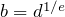
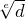
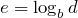
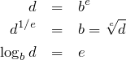
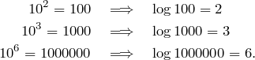

Suscríbete
Suscríbete
Logaritmos
Sumas, multiplicaciones y potencias
En el artículo sobre las potencias hablábamos de la suma, la
multiplicación y la potenciación:  es contar veces a
partir de
es contar veces a
partir de  , es sumar consigo mismo
veces, y es multiplicar por sí mismo veces.
, es sumar consigo mismo
veces, y es multiplicar por sí mismo veces.
Volver atrás: las operaciones inversas
Sabemos que con la suma viene la resta, y con la multiplicación la división; ¿qué viene con la potenciación?
¿Qué es restar? Saber lo que es la suma lo hace más fácil,
porque podemos decir que es un número que sumado a
da . O sea que si alguien nos pide que calculemos
lo que nos está diciendo es que tenemos que encontrar
un número tal que . Pero fíjate en que no nos
tenemos que preocupar por el orden de la suma, porque y
son lo mismo.
¿Y dividir? Usamos el mismo truco: aprovechando que ya
tenemos la multiplicación definida, decimos que es un
número que multiplicado por nos dé . Así que
, y de nuevo no nos tenemos que preocupar por
el orden de la multiplicación, porque es lo mismo
que .
¿Y las potencias? Aquí hay que ir con un poco más de cuidado, porque no es lo mismo que . Dados
tenemos dos preguntas posibles:
-
¿Cuál es el número que elevado a da ? Este
número lo encontramos al hablar de potencias de exponente fraccional, y lo llamamos , o la raíz de de
orden , escrito .
-
¿A qué número hay que elevar para que dé ? A
este número lo llamamos el logaritmo en base de , y
lo escribimos .
Vale la pena ponerlo todo junto:

Logaritmo de una potencia
…
Jugando con logaritmos
Cualquier número positivo vale para ser base de logaritmo, pero hay tres que son especialmente útiles. Uno es el 10, que es el que asumimos por omisión cuando no nos dicen la base. Algunos ejemplos de logaritmos en base 10:

¿Cómo calculas ? Seguramente lo que haces es contar los ceros, porque sabes que el resultado de multiplicar dos potencias de 10 es un uno seguido de tantos ceros como tengan entre los dos números. Pero contar los ceros es lo mismo que hacer el logaritmo en base 10. Estás haciendo y sumándoselo a . El 5 que es el logaritmo en base 10 del resultado que buscas, por lo que será tu número.
Logaritmo de un producto
…
blog comments powered by Disqus